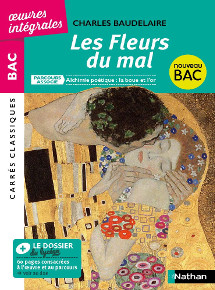

Les fleurs du mal
-Charles Baudelaire-
1857
Alchimie poétique : la boue et l'or

Auteur
Charles Baudelaire
Né à Paris, Charles Baudelaire, orphelin de père à 6 ans, n'accepte pas le remariage de sa mère avec le général Aupick et restera toujours opposé à ce militaire et aux valeurs bourgeoises qu'il incarne. Destiné à faire des études de droit, il est renvoyé du lycée Louis le Grand pour son attitude rebelle à l'autorité. Après avoir obtenu le baccalauréat, il choisit une vie de bohème dans le Quartier Latin. En 1841, sa famille l'incite à embarquer sur un paquebot pour les Indes. De ce voyage qu'il écourte avant son terme à l'île Maurice, il gardera de multiples impressions qui l'inspireront dans certaines de ses œuvres (L'Albatros, Parfum exotique, etc.). De retour à Paris en 1842, Charles Baudelaire mène une vie dissolue et commence à dilapider l'héritage qu'il reçoit de son père à sa majorité. Ayant été mis sous conseil judiciaire par sa famille, il devient, pour vivre, journaliste et critique d'art. Il admire les œuvres d'Eugène Delacroix et d'Edgar Poe dont il traduit des œuvres. Il commence alors à écrire des poèmes qu'il publie dans des revues mais qui rencontrent peu d'écho auprès du public. En 1848, il s'engage aux côtés des républicains, mais ses ardeurs révolutionnaires s'éteignent rapidement avec ses lectures de l'écrivain et philosophe contre-révolutionnaire, Joseph de Maistre (1753-1821). En 1857, Charles Baudelaire publie son œuvre majeure, le recueil de poèmes, "Les Fleurs du Mal". L'ouvrage est condamné "pour outrage à la morale publique et aux bonnes mœurs". Avec son éditeur, Baudelaire doit payer une lourde amende et supprimer certains passages. En 1860, il publie Les Paradis Artificiels, puis l'année suivante une nouvelle version des "Fleurs du Mal", expurgée des six poèmes litigieux. Ce n'est qu'en 1949 que la justice réhabilitera "Les Fleurs du mal". Le poète séjourne en Belgique de 1864 à 1866 pour fuir ses dettes et y donner des conférences. Atteint de syphilis, d'hémiplégie et d'aphasie, il est ramené par sa mère à Paris où il meurt l'année suivante de la syphilis et des conséquences de l'abus d'alcool et de drogues. Il est inhumé au cimetière Montparnasse. Héritière de la tradition classique et du romantisme, la poésie de Charles Baudelaire annonce la modernité et fait de lui un précurseur du symbolisme, puis plus tard du surréalisme. Poète torturé et considéré comme maudit, il décrit la dualité entre le bien et le mal, la volupté et la violence, la beauté et la laideur. Non reconnu de son vivant, il ne passe à la postérité qu'après sa mort.
Resume
• Structure du recueil: Les Fleurs du Mal peut être considéré comme un « bouquet » de poèmes soigneusement arrangés et accordés entre eux. Le recueil est composé de six parties distinctes, chacune évoquant des thèmes différents.
• Spleen et idéal: La section Spleen et Idéal (poèmes I à LXXXV) explore les thèmes de la mélancolie, de la tristesse, de la nostalgie, de la beauté, de l'amour et de l'inspiration. Le spleen, une sensation de mal-être profond causée par la solitude, l'ennui, l'angoisse et l'incertitude face à l'avenir, s'oppose à l'idéal, qui renvoie à la quête de perfection, de beauté et d'harmonie. Baudelaire explore ces deux concepts en alternance pour montrer leur lien étroit et leur influence mutuelle.
• Tableaux parisiens: La section Tableaux Parisiens (poèmes LXXXVI à CIII) décrit la ville de Paris, ses habitants, la vie nocturne et la modernité du XIXe siècle. Elle met en évidence la beauté et la laideur de Paris, montrant comment la ville peut être à la fois fascinante et effrayante. Les poèmes dépeignent Paris sous différents angles, évoquant les rues, les ponts, les monuments et offrant une vision contrastée de la vie urbaine.
• Le vin: La section Le vin (poèmes CIV à CVIII) célèbre l'ivresse et le vin, qui sont des thèmes récurrents dans la poésie de Baudelaire. Le vin est perçu comme une source d'inspiration, de plaisir et de liberté. Baudelaire décrit l'ivresse comme un état de transcendance permettant de s'évader de la réalité et de trouver refuge dans les plaisirs de la chair et de l'esprit. Il célèbre les différentes formes de vin et explore les sensations associées à la consommation de cette boisson.
• Fleurs du Mal: La section Les Fleurs du Mal (poèmes CIX à CXVII) explore la condition humaine et les aspects sombres de la vie. Baudelaire y décrit l'angoisse existentielle, la souffrance, la mort et la déchéance. Il exprime sa vision d'un monde cruel et injuste, explorant les thèmes de la solitude, de la maladie et de la dépression. Les poèmes de cette section reflètent les aspects les plus sombres et tragiques de l'existence humaine.
• Révolte: La section Révolte (poèmes CXVIII à CXX) exprime la révolte de Baudelaire contre la société, la morale et les conventions de son époque. Elle met en avant les thèmes de la liberté, de la rébellion et de la subversion, montrant comment l'art peut être un moyen de s'opposer à l'ordre établi. Baudelaire critique la bourgeoisie, la religion, la politique et la morale conventionnelle, dénonçant une société corrompue et hypocrite qui étouffe l'individualité et l'expression de soi.
• La mort: Enfin, la section La mort (poèmes CXXI à CXVI) exprime la fascination de Baudelaire pour la mort. Il explore les thèmes de la mort physique, de la mort de l'amour et de la mort de l'art, montrant comment ces morts sont inséparables de la condition humaine. Baudelaire présente la mort comme à la fois effrayante et séduisante, et montre comment l'art peut être un moyen de transcender cette condition. Les poèmes de cette section reflètent sa vision d'un monde marqué par la mort et oscillent entre impasse et ultime espoir.
Personnages
Il n'y a pas de personnages dans cette oeuvre, ainsi, l'auteur semble s'adressait aux notions mêmes d'existences et aux fautes dans les fondations essentielles dans la société.
Themes
Les Fleurs du Mal sont ancrées dans plusieurs courants littéraires : le romantisme, le symbolisme et le surréalisme. Voici à ce propos un petit rappel des courants littéraires. À travers le lyrisme, l’expression du moi, le poète met en avant ses sentiments personnels et intimes, souvent liés à l’amour. Baudelaire raconte ainsi dans ses poèmes la déception amoureuse (la séparation, l’amour impossible, la perte de l’être aimé), mais aussi la mélancolie (tristesse profonde), la nostalgie (qui a trait à la fuite du temps) et la solitude.
En cela, Baudelaire est également une figure de proue du romantisme noir, car il s’inspire du pittoresque et du fantastique issus du Moyen- ge, du roman gothique anglais du XIXe siècle (lié notamment à l’œuvre d’Edgar Poe).